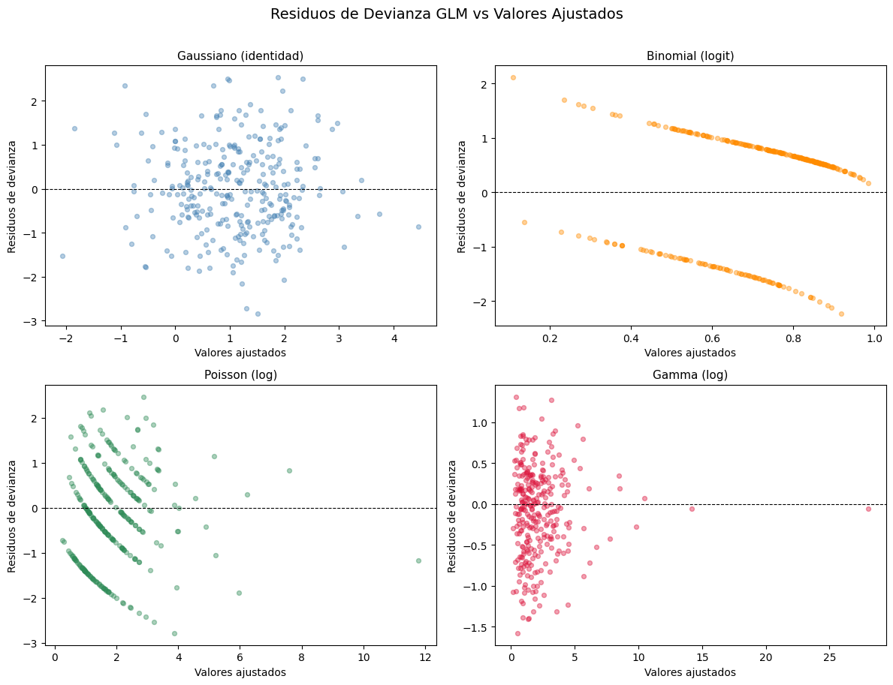

14-1: Panorama de los Modelos Lineales Generalizados (GLMs)#
Curso: Modelos de Análisis Estadístico (MAE) — Universidad de los Andes
Docente: Prof. Alejandra Tabares
Semana: 14
1. El Marco GLM#
Un Modelo Lineal Generalizado unifica una amplia clase de modelos de regresión bajo tres componentes:
1.1 Componente Aleatorio#
La variable respuesta \(Y_i\) sigue una distribución de la familia exponencial:
donde \(\theta_i\) es el parámetro canónico (natural), \(\phi\) es el parámetro de dispersión, y \(a(\cdot)\), \(b(\cdot)\), \(c(\cdot)\) son funciones conocidas. La media es \(\mu_i = b'(\theta_i)\) y la varianza es \(\text{Var}(Y_i) = b''(\theta_i)\,a(\phi)\).
1.2 Componente Sistemático#
El predictor lineal combina las covariables:
1.3 Función de Enlace#
La función de enlace \(g\) conecta la media \(\mu_i\) con el predictor lineal:
Cuando \(g\) es el enlace canónico, \(\theta_i = \eta_i\) y las ecuaciones de puntuación toman una forma especialmente simple.
Idea clave: El modelo lineal clásico es el caso especial donde \(Y_i \sim \mathcal{N}(\mu_i, \sigma^2)\) y \(g\) es la identidad. Los GLMs extienden esto a respuestas no normales y no continuas manteniendo el predictor lineal.
2. Familias GLM Comunes#
Familia |
Tipo de respuesta |
Enlace canónico |
Función de enlace \(g(\mu)\) |
Función de varianza \(V(\mu)\) |
Caso de uso típico |
|---|---|---|---|---|---|
Gaussiana |
Continua, sin límites |
Identidad |
\(\mu\) |
\(1\) |
Regresión clásica |
Binomial |
Proporciones / binaria |
Logit |
\(\ln\!\left(\frac{\mu}{1-\mu}\right)\) |
\(\mu(1-\mu)\) |
Resultados binarios, tasas de éxito |
Poisson |
Conteos no negativos |
Log |
\(\ln(\mu)\) |
\(\mu\) |
Conteos de eventos, eventos raros |
Gamma |
Continua positiva |
Inverso |
\(1/\mu\) |
\(\mu^2\) |
Duraciones sesgadas, costos |
Gaussiana Inversa |
Continua positiva |
\(1/\mu^2\) |
\(1/\mu^2\) |
\(\mu^3\) |
Duraciones muy sesgadas |
Binomial Negativa |
Conteos sobredispersos |
Log |
\(\ln(\mu)\) |
\(\mu + \mu^2/r\) |
Datos de conteo con sobredispersión |
Notas:
El enlace canónico es teóricamente conveniente pero no siempre óptimo en la práctica.
Para Binomial, el probit (\(\Phi^{-1}(\mu)\)) y el log-log complementario (\(\ln(-\ln(1-\mu))\)) son alternativas comunes.
Para Gamma, el enlace log suele preferirse al enlace inverso canónico por su interpretabilidad.
3. Ajuste de GLMs con statsmodels — Ejemplos Simulados#
import numpy as np
import pandas as pd
import statsmodels.api as sm
import statsmodels.formula.api as smf
import matplotlib.pyplot as plt
import warnings
warnings.filterwarnings('ignore')
np.random.seed(42)
n = 300
# Covariables compartidas
x1 = np.random.normal(0, 1, n)
x2 = np.random.normal(0, 1, n)
# Predictor lineal verdadero
eta = 1.0 + 0.8 * x1 - 0.5 * x2
# --- Respuesta Gaussiana (enlace identidad) ---
y_gaussian = eta + np.random.normal(0, 1, n)
# --- Respuesta Binomial (enlace logit) ---
p = 1 / (1 + np.exp(-eta))
y_binomial = np.random.binomial(1, p, n)
# --- Respuesta Poisson (enlace log) ---
mu_poisson = np.exp(0.5 + 0.4 * x1 - 0.3 * x2)
y_poisson = np.random.poisson(mu_poisson, n)
# --- Respuesta Gamma (enlace log para interpretabilidad) ---
mu_gamma = np.exp(0.5 + 0.6 * x1 - 0.4 * x2)
shape_param = 3.0 # forma k; media = k/tasa => tasa = k/mu
y_gamma = np.random.gamma(shape=shape_param, scale=mu_gamma / shape_param, size=n)
df = pd.DataFrame({'x1': x1, 'x2': x2,
'y_gaussian': y_gaussian,
'y_binomial': y_binomial,
'y_poisson': y_poisson,
'y_gamma': y_gamma})
print('Dimensiones del conjunto de datos:', df.shape)
print(df.head())
Dimensiones del conjunto de datos: (300, 6)
x1 x2 y_gaussian y_binomial y_poisson y_gamma
0 0.496714 -0.828995 2.568857 1 1 2.014579
1 -0.138264 -0.560181 0.247314 0 4 1.843936
2 0.647689 0.747294 2.014110 0 3 3.763703
3 1.523030 0.610370 3.268877 1 6 4.740849
4 -0.234153 -0.020902 1.236563 1 1 0.226437
# ── Ajuste de los cuatro GLMs ──────────────────────────────────────────────────────────
# 1. GLM Gaussiano (equivalente a MCO)
glm_gaussian = smf.glm('y_gaussian ~ x1 + x2', data=df,
family=sm.families.Gaussian()).fit()
# 2. GLM Binomial (regresión logística)
glm_binomial = smf.glm('y_binomial ~ x1 + x2', data=df,
family=sm.families.Binomial()).fit()
# 3. GLM Poisson (enlace log)
glm_poisson = smf.glm('y_poisson ~ x1 + x2', data=df,
family=sm.families.Poisson()).fit()
# 4. GLM Gamma (enlace log)
glm_gamma = smf.glm('y_gamma ~ x1 + x2', data=df,
family=sm.families.Gamma(link=sm.families.links.Log())).fit()
# Imprimir tablas de coeficientes
for name, model in [('Gaussiano', glm_gaussian), ('Binomial', glm_binomial),
('Poisson', glm_poisson), ('Gamma', glm_gamma)]:
print(f'\n{'='*55}')
print(f' GLM {name} — estimaciones de coeficientes')
print(f'{'='*55}')
print(model.summary2().tables[1].to_string())
=======================================================
GLM Gaussiano — estimaciones de coeficientes
=======================================================
Coef. Std.Err. z P>|z| [0.025 0.975]
Intercept 1.081242 0.057680 18.745606 2.102611e-78 0.968191 1.194292
x1 0.760349 0.058736 12.945138 2.503130e-38 0.645228 0.875470
x2 -0.534090 0.060115 -8.884443 6.424196e-19 -0.651913 -0.416266
=======================================================
GLM Binomial — estimaciones de coeficientes
=======================================================
Coef. Std.Err. z P>|z| [0.025 0.975]
Intercept 0.975382 0.141306 6.902608 5.105652e-12 0.698427 1.252338
x1 0.720474 0.154575 4.660991 3.146905e-06 0.417512 1.023435
x2 -0.558695 0.147114 -3.797693 1.460489e-04 -0.847034 -0.270356
=======================================================
GLM Poisson — estimaciones de coeficientes
=======================================================
Coef. Std.Err. z P>|z| [0.025 0.975]
Intercept 0.481961 0.047792 10.084470 6.471330e-24 0.388290 0.575632
x1 0.450341 0.039764 11.325486 9.813305e-30 0.372406 0.528276
x2 -0.300558 0.045148 -6.657160 2.791696e-11 -0.389047 -0.212070
=======================================================
GLM Gamma — estimaciones de coeficientes
=======================================================
Coef. Std.Err. z P>|z| [0.025 0.975]
Intercept 0.476902 0.030262 15.758998 5.956997e-56 0.417590 0.536215
x1 0.656916 0.030817 21.316995 7.896868e-101 0.596517 0.717315
x2 -0.393231 0.031540 -12.467686 1.120321e-35 -0.455048 -0.331414
4. Cómo Elegir una Familia GLM#
Seleccionar la familia GLM correcta implica tanto razonamiento sustantivo como verificaciones empíricas:
Paso 1 — Observe la variable respuesta#
Tipo de respuesta |
Primera familia candidata |
|---|---|
Continua, aproximadamente simétrica |
Gaussiana |
Binaria (0/1) o proporción |
Binomial |
Entero no negativo (conteo) |
Poisson |
Continua positiva, con sesgo a la derecha |
Gamma |
Continua positiva, muy sesgada |
Gaussiana Inversa |
Paso 2 — Verifique la relación media-varianza#
Grafique las medias grupales contra las varianzas grupales (o los residuos). Si la varianza crece con la media:
Proporcionalmente → Poisson
Como \(\mu^2\) → Gamma
Más rápido que \(\mu^2\) → considere Binomial Negativa o quasi-Poisson
Paso 3 — Compare modelos candidatos#
Use el AIC (Criterio de Información de Akaike) para comparar modelos con la misma variable respuesta pero diferentes familias o funciones de enlace: $\( \text{AIC} = -2\,\ell(\hat{\boldsymbol{\beta}}) + 2p \)$ Un AIC menor es mejor. No compare AIC entre diferentes transformaciones de la respuesta.
Paso 4 — Inspeccione los residuos#
Use residuos de devianza o residuos de Pearson graficados contra los valores ajustados para detectar patrones.
# ── Tabla de comparación AIC ───────────────────────────────────────────────────────────
# Ajustamos funciones de enlace alternativas para el modelo Gamma para ilustrar la selección por AIC
glm_gamma_inv = smf.glm('y_gamma ~ x1 + x2', data=df,
family=sm.families.Gamma(
link=sm.families.links.InversePower())).fit()
glm_gamma_id = smf.glm('y_gamma ~ x1 + x2', data=df,
family=sm.families.Gamma(
link=sm.families.links.Identity())).fit()
aic_table = pd.DataFrame({
'Model': [
'Gaussian (identity)',
'Binomial (logit)',
'Poisson (log)',
'Gamma (log link)',
'Gamma (inverse link)',
'Gamma (identity link)'
],
'Response': ['y_gaussian', 'y_binomial', 'y_poisson',
'y_gamma', 'y_gamma', 'y_gamma'],
'AIC': [
glm_gaussian.aic,
glm_binomial.aic,
glm_poisson.aic,
glm_gamma.aic,
glm_gamma_inv.aic,
glm_gamma_id.aic
],
'Deviance': [
glm_gaussian.deviance,
glm_binomial.deviance,
glm_poisson.deviance,
glm_gamma.deviance,
glm_gamma_inv.deviance,
glm_gamma_id.deviance
],
'df_resid': [
glm_gaussian.df_resid,
glm_binomial.df_resid,
glm_poisson.df_resid,
glm_gamma.df_resid,
glm_gamma_inv.df_resid,
glm_gamma_id.df_resid
]
})
aic_table['AIC'] = aic_table['AIC'].round(2)
aic_table['Deviance'] = aic_table['Deviance'].round(4)
print('\nTabla de Comparación AIC')
print('=' * 70)
print(aic_table.to_string(index=False))
# Entre los modelos Gamma, el enlace log gana (menor AIC)
gamma_aic = aic_table[aic_table['Response'] == 'y_gamma'].copy()
best = gamma_aic.loc[gamma_aic['AIC'].idxmin(), 'Model']
print(f'\nMejor enlace Gamma según AIC: {best}')
Tabla de Comparación AIC
======================================================================
Model Response AIC Deviance df_resid
Gaussian (identity) y_gaussian 853.61 296.2702 297
Binomial (logit) y_binomial 330.95 324.9485 297
Poisson (log) y_poisson 960.38 349.8302 297
Gamma (log link) y_gamma 715.83 92.1685 297
Gamma (inverse link) y_gamma 1075.22 238.2770 297
Gamma (identity link) y_gamma 1115.91 270.1365 297
Mejor enlace Gamma según AIC: Gamma (log link)
# ── Gráficos de residuos para diagnóstico del GLM ─────────────────────────────────────
fig, axes = plt.subplots(2, 2, figsize=(12, 9))
fig.suptitle('Residuos de Devianza GLM vs Valores Ajustados', fontsize=14, y=1.01)
models_plot = [
(glm_gaussian, 'Gaussiano (identidad)', 'steelblue'),
(glm_binomial, 'Binomial (logit)', 'darkorange'),
(glm_poisson, 'Poisson (log)', 'seagreen'),
(glm_gamma, 'Gamma (log)', 'crimson'),
]
for ax, (model, title, color) in zip(axes.flatten(), models_plot):
fitted = model.fittedvalues
resid = model.resid_deviance
ax.scatter(fitted, resid, alpha=0.4, s=18, color=color)
ax.axhline(0, color='black', linewidth=0.8, linestyle='--')
ax.set_xlabel('Valores ajustados', fontsize=10)
ax.set_ylabel('Residuos de devianza', fontsize=10)
ax.set_title(title, fontsize=11)
plt.tight_layout()
plt.show()

5. Devianza y Bondad de Ajuste en GLMs#
Devianza#
La devianza generaliza la suma de cuadrados residual (SCR) a los GLMs:
El modelo saturado tiene un parámetro por observación (\(\hat{\mu}_i = y_i\)), alcanzando la log-verosimilitud máxima posible.
Para un GLM Gaussiano, \(D = \text{SCR}/\sigma^2\) — idéntico a la SC residual de la prueba F clásica.
Para Poisson: \(D = 2\sum_i \left[y_i \ln(y_i/\hat{\mu}_i) - (y_i - \hat{\mu}_i)\right]\)
Devianza Nula y Residual#
Cantidad |
Definición |
Grados de libertad |
|---|---|---|
Devianza nula |
Devianza del modelo solo con intercepto |
\(n - 1\) |
Devianza residual |
Devianza del modelo ajustado |
\(n - p - 1\) |
Devianza explicada |
Nula \(-\) Residual |
\(p\) |
Estadístico \(\chi^2\) de Pearson#
Tanto \(D\) como \(X^2\) siguen aproximadamente \(\chi^2_{n-p-1}\) bajo el modelo — pero solo en muestras grandes y para respuestas continuas.
Sobredispersión#
En los GLMs Poisson/Binomial, el parámetro de dispersión \(\phi\) está fijo en 1. Si \(D/(n-p-1) \gg 1\), los datos exhiben sobredispersión. Soluciones:
Usar quasi-Poisson o quasi-Binomial (estima \(\phi\) a partir de los datos)
Cambiar a regresión Binomial Negativa
Pseudo-\(R^2\)#
Útil para comparaciones relativas, no como medida absoluta.